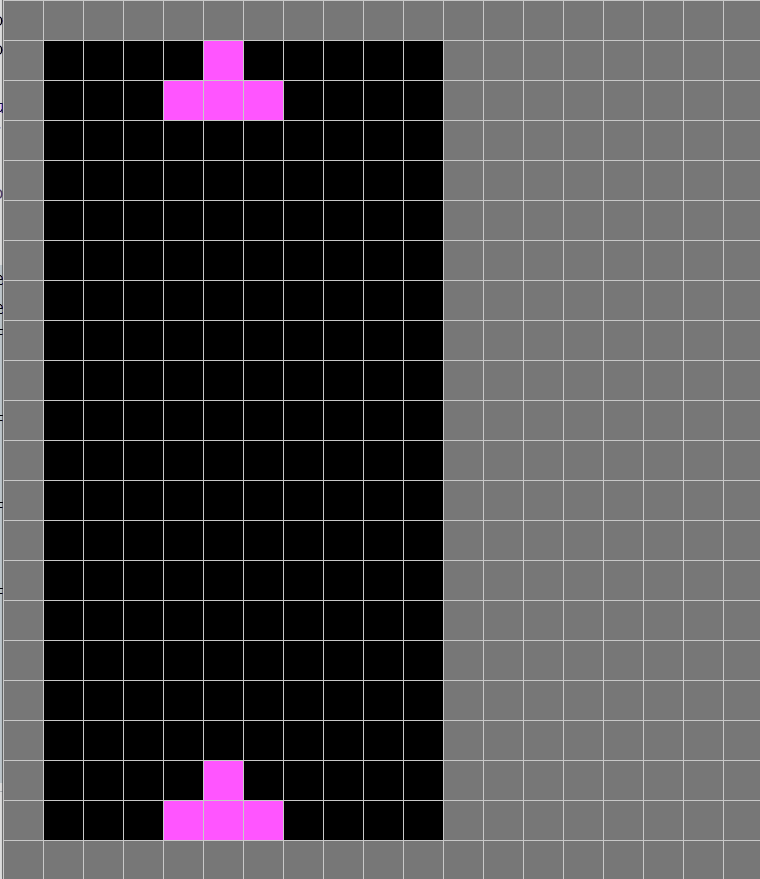

Tetris
《俄羅斯方塊》（俄語：Тетрис，英語：Tetris），是1980年末期至1990年代初期風靡全世界的電腦遊戲，是落下型益智遊戲的始祖，為蘇聯首個在美國發佈的娛樂軟件。此遊戲最初由阿列克謝·帕基特諾夫在蘇聯設計和編寫，於1984年6月6日首次發佈，當時他正在蘇聯科學院電算中心工作。此遊戲的名稱是由希臘語數字「四」的前綴「tetra-」（因所有落下方塊皆由四塊組成）和帕基特諾夫最喜歡的運動網球（「tennis」）拼接而成，華語地區則因遊戲為俄羅斯人發明普遍稱為「俄羅斯方塊」。

Tetris0. 本章重點1. 準備畫面和class Spot用來裝起所有格2. 俄羅斯方塊的元素3. 新增鄰居4. 新增Tetromino Block5. 令Tetromino Block向下6. 令Tetromino Block懂得堆疊7. 令Tetromino Block左右移動8. Tetromino Block旋轉和快速到底9. 每次新block都抽不同的元素10. 考考你
0. 本章重點
熟習class的用法
frameRate()外控制速度的方法
1. 準備畫面和class Spot用來裝起所有格
tetris.pyde:
x1from spot import *2from gameBoard import *3
4gridSize = 405gameBoard = 06
7def setup():8 global gameBoard9 size(gridSize*(12+7), gridSize*22) 10 gameBoard = GameBoard(gridSize)11 12def draw():13 drawBackground()14 gameBoard.show()15
16def drawBackground():17 fill('#777777')18 for i in range(12+7):19 for j in range(22):20 rect(i*gridSize, j*gridSize, gridSize, gridSize)gameBoard.py:
xxxxxxxxxx161from spot import *2
3class GameBoard(object):4 5 def __init__(self, _gridSize):6 self.grids = []7 for x in range(10):8 tempGrids = []9 for y in range(20):10 tempGrids.append(Spot(x, y, x*_gridSize+_gridSize, y*_gridSize+_gridSize, _gridSize, _gridSize))11 self.grids.append(tempGrids)12 13 def show(self):14 for x in range(10):15 for y in range(20):16 self.grids[x][y].show('#000000') spot.py:
xxxxxxxxxx131class Spot(object):2 def __init__(self, _i, _j, _x, _y, _w, _h):3 self.i = _i4 self.j = _j5 self.x = _x6 self.y = _y7 self.w = _w8 self.h = _h9
10 def show(self, _color):11 fill(_color)12 stroke(200)13 rect(self.x, self.y, self.w, self.h)新增兩個class,首先是 spot是用來裝起每一個格的變數，這個class包含i和j是格的行列，x和y是其顯示座標，w和h則是格的大小。
另一個class GameBoard用來真正裝起整個game的畫面，之所以要用一個class去包起，而不直接在draw()中直接去畫，一來是為了簡潔，二來是為了擴展需要，寫好之後可以同一時間加多另一個gameboard，可以實玩雙打。
2. 俄羅斯方塊的元素
俄羅斯方塊共有7個元素，依次分別為T，L，J，I，Z，S和O。而這此元素亦可以旋轉，所以一共19個可能性。

tetris.pyde:
xxxxxxxxxx271from spot import *2from gameBoard import *3
4gridSize = 405gameBoard = 06
7def setup():8 global gameBoard9 size(gridSize*(12+7), gridSize*22) 10 gameBoard = GameBoard(gridSize)11 12def draw():13 drawBackground()14 gameBoard.show()15 gameBoard.grids[3][0].name ='T'16 gameBoard.grids[3][1].name ='L'17 gameBoard.grids[3][2].name ='J'18 gameBoard.grids[3][3].name ='I'19 gameBoard.grids[3][4].name ='Z'20 gameBoard.grids[3][5].name ='S'21 gameBoard.grids[3][6].name ='O'22 23def drawBackground():24 fill('#777777')25 for i in range(12+7):26 for j in range(22):27 rect(i*gridSize, j*gridSize, gridSize, gridSize)spot.py:
xxxxxxxxxx161from spot import *2
3class GameBoard(object):4 5 def __init__(self, _gridSize):6 self.grids = []7 for x in range(10):8 tempGrids = []9 for y in range(20):10 tempGrids.append(Spot(x, y, x*_gridSize+_gridSize, y*_gridSize+_gridSize, _gridSize, _gridSize))11 self.grids.append(tempGrids)12 13 def show(self):14 for x in range(10):15 for y in range(20):16 self.grids[x][y].show() gameBoard.py:
xxxxxxxxxx291class Spot(object):2 def __init__(self, _i, _j, _x, _y, _w, _h):3 self.i = _i4 self.j = _j5 self.x = _x6 self.y = _y7 self.w = _w8 self.h = _h9 self.name = ''10
11 def show(self):12 if self.name == '':13 fill(0)14 elif self.name == 'T':15 fill('#FF55FF')16 elif self.name == 'L':17 fill('#C4A484')18 elif self.name == 'J':19 fill('#5555FF')20 elif self.name == 'I':21 fill('#52BAA2')22 elif self.name == 'Z':23 fill('#FF5555')24 elif self.name == 'S':25 fill('#55FF55')26 elif self.name == 'O':27 fill('#FFFF55')28 stroke(200)29 rect(self.x, self.y, self.w, self.h)在上一個版本中，grids的show()是根據輸入的顏色，用來測試和效果。接著今次的版本，我們要根據上述俄羅斯方塊的元素去填顏色。
在class Spot中，
xxxxxxxxxx191def show(self):2 if self.name == '':3 fill(0)4 elif self.name == 'T':5 fill('#FF55FF')6 elif self.name == 'L':7 fill('#C4A484')8 elif self.name == 'J':9 fill('#5555FF')10 elif self.name == 'I':11 fill('#52BAA2')12 elif self.name == 'Z':13 fill('#FF5555')14 elif self.name == 'S':15 fill('#55FF55')16 elif self.name == 'O':17 fill('#FFFF55')18 stroke(200)19 rect(self.x, self.y, self.w, self.h)將之前的show()加入不同元素顯示不同顏色。
之後在主頁的中，
xxxxxxxxxx101def draw():2 drawBackground()3 gameBoard.show()4 gameBoard.grids[3][0].name ='T'5 gameBoard.grids[3][1].name ='L'6 gameBoard.grids[3][2].name ='J'7 gameBoard.grids[3][3].name ='I'8 gameBoard.grids[3][4].name ='Z'9 gameBoard.grids[3][5].name ='S'10 gameBoard.grids[3][6].name ='O'測試一下不同的元素是否有對應相對的顏色。
3. 新增鄰居
tetris.pyde:
xxxxxxxxxx271from spot import *2from gameBoard import *3
4gridSize = 405gameBoard = 06
7def setup():8 global gameBoard9 size(gridSize*(12+7), gridSize*22) 10 gameBoard = GameBoard(gridSize)11 gameBoard.addNeighbors()12 gameBoard.grids[5][8].name = 'L'13 println(gameBoard.grids[5][8].neighbors)14 gameBoard.grids[5][8].neighbors[0].name = 'J'15 gameBoard.grids[5][8].neighbors[1].name = 'S'16 gameBoard.grids[5][8].neighbors[2].name = 'Z'17 gameBoard.grids[5][8].neighbors[3].name = 'O'18 19def draw():20 drawBackground()21 gameBoard.show()22
23def drawBackground():24 fill('#777777')25 for i in range(12+7):26 for j in range(22):27 rect(i*gridSize, j*gridSize, gridSize, gridSize)spot.py:
xxxxxxxxxx421class Spot(object):2 def __init__(self, _i, _j, _x, _y, _w, _h):3 self.i = _i4 self.j = _j5 self.x = _x6 self.y = _y7 self.w = _w8 self.h = _h9 self.name = ''10 self.neighbors = []11 for i in range(4):12 self.neighbors.append('')13
14 def show(self):15 if self.name == '':16 fill(0)17 elif self.name == 'T':18 fill('#FF55FF')19 elif self.name == 'L':20 fill('#C4A484')21 elif self.name == 'J':22 fill('#5555FF')23 elif self.name == 'I':24 fill('#52BAA2')25 elif self.name == 'Z':26 fill('#FF5555')27 elif self.name == 'S':28 fill('#55FF55')29 elif self.name == 'O':30 fill('#FFFF55')31 stroke(200)32 rect(self.x, self.y, self.w, self.h)33
34 def addNeighbors(self, _grid):35 if self.j > 0:36 self.neighbors[0] = _grid[self.i][self.j-1] #UP37 if self.i < 9:38 self.neighbors[1] = _grid[self.i+1][self.j] #RIGHT39 if self.j < 19:40 self.neighbors[2] = _grid[self.i][self.j+1] #DOWN41 if self.i > 0:42 self.neighbors[3] = _grid[self.i-1][self.j] #LEFTgameBoard.py:
xxxxxxxxxx211from spot import *2
3class GameBoard(object):4 5 def __init__(self, _gridSize):6 self.grids = []7 for x in range(10):8 tempGrids = []9 for y in range(20):10 tempGrids.append(Spot(x, y, x*_gridSize+_gridSize, y*_gridSize+_gridSize, _gridSize, _gridSize))11 self.grids.append(tempGrids)12
13 def addNeighbors(self):14 for i in range(10):15 for j in range(20):16 self.grids[i][j].addNeighbors(self.grids)17
18 def show(self):19 for x in range(10):20 for y in range(20):21 self.grids[x][y].show() 
在class Spot中，
xxxxxxxxxx91def addNeighbors(self, _grid):2 if self.j > 0:3 self.neighbors[0] = _grid[self.i][self.j-1] #UP4 if self.i < 9:5 self.neighbors[1] = _grid[self.i+1][self.j] #RIGHT6 if self.j < 19:7 self.neighbors[2] = _grid[self.i][self.j+1] #DOWN8 if self.i > 0:9 self.neighbors[3] = _grid[self.i-1][self.j] #LEFT加入addNeighbors()的函數，跟之前一樣，四個鄰居的次序分別是上、右、下、左順時針方向。
xxxxxxxxxx41def addNeighbors(self):2 for i in range(10):3 for j in range(20):4 self.grids[i][j].addNeighbors(self.grids)之後在GameBoardclass中，將10x20個spot都執行addNeighbors()。
xxxxxxxxxx111def setup():2 global gameBoard3 size(gridSize*(12+7), gridSize*22) 4 gameBoard = GameBoard(gridSize)5 gameBoard.addNeighbors()6 gameBoard.grids[5][8].name = 'L'7 println(gameBoard.grids[5][8].neighbors)8 gameBoard.grids[5][8].neighbors[0].name = 'J'9 gameBoard.grids[5][8].neighbors[1].name = 'S'10 gameBoard.grids[5][8].neighbors[2].name = 'Z'11 gameBoard.grids[5][8].neighbors[3].name = 'O'最後就可以在主程式中，執行addNeighbors()，為了測試是否正確加入鄰居，可以將四個鄰居都設定成不同的元素來測試看看顏色。
4. 新增Tetromino Block

tetris.pyde:
xxxxxxxxxx221from spot import *2from gameBoard import *3
4gridSize = 405
6gameBoard = 07
8def setup():9 global gameBoard10 size(gridSize*(12+7), gridSize*22) 11 gameBoard = GameBoard(gridSize)12 gameBoard.addNeighbors()13
14def draw():15 drawBackground()16 gameBoard.show()17
18def drawBackground():19 fill('#777777')20 for i in range(12+7):21 for j in range(22):22 rect(i*gridSize, j*gridSize, gridSize, gridSize)gameBoard.py:
xxxxxxxxxx231from spot import *2from block import *3
4class GameBoard(object): 5 def __init__(self, _gridSize):6 self.grids = []7 self.block = Block(3,0,'T', self.grids)8 for x in range(10):9 tempGrids = []10 for y in range(20):11 tempGrids.append(Spot(x, y, x*_gridSize+_gridSize, y*_gridSize+_gridSize, _gridSize, _gridSize))12 self.grids.append(tempGrids)13
14 def addNeighbors(self):15 for i in range(10):16 for j in range(20):17 self.grids[i][j].addNeighbors(self.grids)18
19 def show(self):20 self.block.setType()21 for x in range(10):22 for y in range(20):23 self.grids[x][y].show()spot.py:
xxxxxxxxxx421class Spot(object):2 def __init__(self, _i, _j, _x, _y, _w, _h):3 self.i = _i4 self.j = _j5 self.x = _x6 self.y = _y7 self.w = _w8 self.h = _h9 self.name = ''10 self.neighbors = []11 for i in range(4):12 self.neighbors.append('')13
14 def show(self):15 if self.name == '':16 fill(0)17 elif self.name == 'T':18 fill('#FF55FF')19 elif self.name == 'L':20 fill('#DD6800')21 elif self.name == 'J':22 fill('#004ADD')23 elif self.name == 'I':24 fill('#0DCCCC')25 elif self.name == 'Z':26 fill('#FF5555')27 elif self.name == 'S':28 fill('#00DD26')29 elif self.name == 'O':30 fill('#DDDD00')31 stroke(200)32 rect(self.x, self.y, self.w, self.h)33
34 def addNeighbors(self, _grid):35 if self.j > 0:36 self.neighbors[0] = _grid[self.i][self.j-1] #UP37 if self.i < 9:38 self.neighbors[1] = _grid[self.i+1][self.j] #RIGHT39 if self.j < 19:40 self.neighbors[2] = _grid[self.i][self.j+1] #DOWN41 if self.i > 0:42 self.neighbors[3] = _grid[self.i-1][self.j] #LEFTblock.py:
xxxxxxxxxx381from spot import *2
3class Block(object):4
5 shapeIndex = ['I', 'Z', 'S', 'J', 'L', 'T', 'O']6
7 # Shapes of the blocks8 shapes = [9 [[1, 5, 9, 13], [4, 5, 6, 7]], #type 'I'10 [[4, 5, 9, 10], [2, 6, 5, 9]], #type 'Z'11 [[6, 7, 9, 10], [1, 5, 6, 10]], #type 'S'12 [[1, 2, 5, 9], [0, 4, 5, 6], [1, 5, 9, 8], [4, 5, 6, 10]], #type 'J'13 [[1, 2, 6, 10], [5, 6, 7, 9], [2, 6, 10, 11], [3, 5, 6, 7]], #type 'L'14 [[1, 4, 5, 6], [1, 4, 5, 9], [4, 5, 6, 9], [1, 5, 6, 9]], #type 'T'15 [[1, 2, 5, 6]], #type 'O'16 ]17
18 def __init__(self, _x, _y, _type, _grid):19 self.x = _x20 self.y = _y21 self.type = _type22 self.grid = _grid23
24 self.rotation = 025 self.index = self.shapeIndex.index(self.type)26 27 def shape(self):28 return self.shapes[self.index][self.rotation]29
30 def rotate(self):31 self.rotation = (self.rotation + 1) % len(self.shapes[self.index])32
33 def setType(self):34 for i in range(4):35 for j in range(4):36 _index = i*4+j37 if _index in self.shape():38 self.grid[self.x+j][self.y+i].name = self.type在主程式 tetris.pyde，將之前用來debug的內容刪除。 spot.py沒有變化，貼出來只是方便大家對一對整個program，看看有否錯漏。
xxxxxxxxxx121shapeIndex = ['I', 'Z', 'S', 'J', 'L', 'T', 'O']2
3# Shapes of the blocks4shapes = [5 [[1, 5, 9, 13], [4, 5, 6, 7]], #type 'I'6 [[4, 5, 9, 10], [2, 6, 5, 9]], #type 'Z'7 [[6, 7, 9, 10], [1, 5, 6, 10]], #type 'S'8 [[1, 2, 5, 9], [0, 4, 5, 6], [1, 5, 9, 8], [4, 5, 6, 10]], #type 'J'9 [[1, 2, 6, 10], [5, 6, 7, 9], [2, 6, 10, 11], [3, 5, 6, 7]], #type 'L'10 [[1, 4, 5, 6], [1, 4, 5, 9], [4, 5, 6, 9], [1, 5, 6, 9]], #type 'T'11 [[1, 2, 5, 6]], #type 'O'12]新增一個class叫Block，這個block是就是俄羅斯方塊的方塊，俄羅斯方塊的元素有7個，其有19個可能性，要實現的話，比較容易的方法是將所有block統一變成4x4的格，再在對應的格中增色，如上圖。
xxxxxxxxxx81def __init__(self, _x, _y, _type, _grid):2 self.x = _x3 self.y = _y4 self.type = _type5 self.grid = _grid6
7 self.rotation = 08 self.index = self.shapeIndex.index(self.type)這個Blockclass有自己的座標，這個x和y是指4x4格中的最左上角。type是block的元素，就是'I', 'Z', 'S', 'J', 'L', 'T', 'O'中的一個。grid是gameBoard中的grids。由於shapeIndex = ['I', 'Z', 'S', 'J', 'L', 'T', 'O']是用文字去表達方便去閱讀，所以要將其變成數字，方便之後在shapes中查找對應的格，所以要用到index()指令，index()指令就是查找你輸入的內容，再輸出list中的位置索引。
xxxxxxxxxx121def shape(self):2 return self.shapes[self.index][self.rotation]3
4def rotate(self):5 self.rotation = (self.rotation + 1) % len(self.shapes[self.index])6
7def setType(self):8 for i in range(4):9 for j in range(4):10 _index = i*4+j11 if _index in self.shape():12 self.grid[self.x+j][self.y+i].name = self.typeshape()函數: 用來裝起shapelist (純粹是因為原名字太長太多self)。
rotate()函數: 每次call這個函數，self.rotation就加1。如此上面的shapelist中的self.shapes[self.index][self.rotation]後面的rotation就會變下一個，但因這個list中內容各有長短，所以要除以len(self.shapes[self.index])的餘數，這裡的len()是長度的意思。
setType()函數: _index = i*4+j就是重現上圖的0-15，如果這個數字是上圖shape中的內容，就將對應格的name設成這個block的type。
xxxxxxxxxx151class GameBoard(object): 2 def __init__(self, _gridSize):3 self.grids = []4 self.block = Block(3,0,'T', self.grids)5 for x in range(10):6 tempGrids = []7 for y in range(20):8 tempGrids.append(Spot(x, y, x*_gridSize+_gridSize, y*_gridSize+_gridSize, _gridSize, _gridSize))9 self.grids.append(tempGrids)10 #other codes11 def show(self):12 self.block.setType()13 for x in range(10):14 for y in range(20):15 self.grids[x][y].show()最後在GameBoardclass中，加入self.block = Block(3,0,'T', self.grids)新的block，座標在(3, 0)，元素是'T'。而在下面的show()中，在顯示之前，先將block的內容都設定好。
5. 令Tetromino Block向下
tetris.pyde:
xxxxxxxxxx231from spot import *2from gameBoard import *3
4gridSize = 405
6gameBoard = 07
8def setup():9 global gameBoard, timer10 size(gridSize*(12+7), gridSize*22) 11 gameBoard = GameBoard(gridSize)12 gameBoard.addNeighbors()13
14def draw():15 drawBackground()16 gameBoard.update()17 gameBoard.show()18
19def drawBackground():20 fill('#777777')21 for i in range(12+7):22 for j in range(22):23 rect(i*gridSize, j*gridSize, gridSize, gridSize)gameBoard.py:
xxxxxxxxxx391from spot import *2from block import *3
4class GameBoard(object):5 6 def __init__(self, _gridSize):7 self.grids = []8 self.block = Block(3,0,'T', self.grids)9 for x in range(10):10 tempGrids = []11 for y in range(20):12 tempGrids.append(Spot(x, y, x*_gridSize+_gridSize, y*_gridSize+_gridSize, _gridSize, _gridSize))13 self.grids.append(tempGrids)14 self.timer = millis()15
16 def addNeighbors(self):17 for i in range(10):18 for j in range(20):19 self.grids[i][j].addNeighbors(self.grids)20
21 def update(self):22 if millis() - self.timer > 200:23 self.timer = millis()24 self.clearGrid()25 self.block.goDown()26 if self.block.isWall(2):27 self.block.setLock()28
29 def show(self):30 self.block.setType()31 for x in range(10):32 for y in range(20):33 self.grids[x][y].show()34
35 def clearGrid(self):36 for x in range(10):37 for y in range(20):38 if self.grids[x][y].isLock == False:39 self.grids[x][y].name = ''spot.py:
xxxxxxxxxx431class Spot(object):2 def __init__(self, _i, _j, _x, _y, _w, _h):3 self.i = _i4 self.j = _j5 self.x = _x6 self.y = _y7 self.w = _w8 self.h = _h9 self.name = ''10 self.isLock = False11 self.neighbors = []12 for i in range(4):13 self.neighbors.append('')14
15 def show(self):16 if self.name == '':17 fill(0)18 elif self.name == 'T':19 fill('#FF55FF')20 elif self.name == 'L':21 fill('#DD6800')22 elif self.name == 'J':23 fill('#004ADD')24 elif self.name == 'I':25 fill('#0DCCCC')26 elif self.name == 'Z':27 fill('#FF5555')28 elif self.name == 'S':29 fill('#00DD26')30 elif self.name == 'O':31 fill('#DDDD00')32 stroke(200)33 rect(self.x, self.y, self.w, self.h)34
35 def addNeighbors(self, _grid):36 if self.j > 0:37 self.neighbors[0] = _grid[self.i][self.j-1] #UP38 if self.i < 9:39 self.neighbors[1] = _grid[self.i+1][self.j] #RIGHT40 if self.j < 19:41 self.neighbors[2] = _grid[self.i][self.j+1] #DOWN42 if self.i > 0:43 self.neighbors[3] = _grid[self.i-1][self.j] #LEFTblock.py:
xxxxxxxxxx761from spot import *2
3class Block(object):4
5 shapeIndex = ['I', 'Z', 'S', 'J', 'L', 'T', 'O']6
7 # Shapes of the blocks8 shapes = [9 [[1, 5, 9, 13], [4, 5, 6, 7]], #type 'I'10 [[4, 5, 9, 10], [2, 6, 5, 9]], #type 'Z'11 [[6, 7, 9, 10], [1, 5, 6, 10]], #type 'S'12 [[1, 2, 5, 9], [0, 4, 5, 6], [1, 5, 9, 8], [4, 5, 6, 10]], #type 'J'13 [[1, 2, 6, 10], [5, 6, 7, 9], [2, 6, 10, 11], [3, 5, 6, 7]], #type 'L'14 [[1, 4, 5, 6], [1, 4, 5, 9], [4, 5, 6, 9], [1, 5, 6, 9]], #type 'T'15 [[1, 2, 5, 6]], #type 'O'16 ]17
18 def __init__(self, _x, _y, _type, _grid):19 self.x = _x20 self.y = _y21 self.type = _type22 self.grid = _grid23
24 self.rotation = 025 self.index = self.shapeIndex.index(self.type)26 27 def shape(self):28 return self.shapes[self.index][self.rotation]29
30 def rotate(self):31 self.rotation = (self.rotation + 1) % len(self.shapes[self.index])32
33 def setType(self):34 for i in range(4):35 for j in range(4):36 _index = i*4+j37 if _index in self.shape():38 self.grid[self.x+j][self.y+i].name = self.type39
40 def isWall(self, _direction):41 isWall = False42 for i in range(4):43 for j in range(4):44 _index = i*4+j45 if _index in self.shape():46 if _direction == 2:47 if i+self.y>=19:48 isWall = True49 elif _direction == 3:50 if self.x+j<=0:51 isWall = True52 elif _direction == 1:53 if self.x+j>=9 :54 isWall = True55 return isWall56
57 def isBlocked(self, _direction):58 isBlocked = False59 for i in range(4):60 for j in range(4):61 _index = i*4+j62 if _index in self.shape():63 if self.grid[self.x+j][self.y+i].neighbors[_direction].isLock == True:64 isBlocked = True65 return isBlocked66
67 def setLock(self):68 for i in range(4):69 for j in range(4):70 _index = i*4+j71 if _index in self.shape():72 self.grid[self.x+j][self.y+i].isLock = True73
74 def goDown(self):75 if not self.isWall(2) and not self.isBlocked(2):76 self.y += 1spot.py沒有變化。
主程式tetris.pyde中，亦只有在draw()中加多了一句gameBoard.update()，其他都沒有變化。
先解說gameBoard.py:
xxxxxxxxxx71 def update(self):2 if millis() - self.timer > 200:3 self.timer = millis()4 self.clearGrid()5 self.block.goDown()6 if self.block.isWall(2):7 self.block.setLock()在GameBoard class中，加入函數update()。if millis() - self.timer > 200:配合self.timer = millis()是一個常用的格式，在arduino或processing這類本身就預設有forever loop的程式中，要想同一時間執行幾個delay，就需要用到這個格式。
每隔200ms，先將全部沒有鎖起的格都清空，指著將block向下一格，如果block到了最底，就將這個block的內容鎖起來。isWall(2)中的2是指之前addNeighbors()中的次序，上,右,下,左分別是0,1,2,3。
至於上面block的函數怎樣實現，就要看看Blockclass中怎樣做。
xxxxxxxxxx161def isWall(self, _direction):2 isWall = False3 for i in range(4):4 for j in range(4):5 _index = i*4+j6 if _index in self.shape():7 if _direction == 2:8 if i+self.y>=19:9 isWall = True10 elif _direction == 3:11 if self.x+j<=0:12 isWall = True13 elif _direction == 1:14 if self.x+j>=9 :15 isWall = True16 return isWallblock的16個格都掃一次，如果是對應shape的內容，就看看方向，_direction == 2即下方，如果i+self.y>=19(即block的內容)到達19或以上，即已經到達最後一格，所以到底了，同理，其他左方(_direction == 3)和右方(_direction == 1)也是一樣。
xxxxxxxxxx91def isBlocked(self, _direction):2 isBlocked = False3 for i in range(4):4 for j in range(4):5 _index = i*4+j6 if _index in self.shape():7 if self.grid[self.x+j][self.y+i].neighbors[_direction].isLock == True:8 isBlocked = True9 return isBlockedisBlock()函數跟上面的isWall()函數十分相似，分別是我們之前在GameBoard class中已經做了addNeighbors()，所以直接查詢對應方向的鄰居是否已經鎖上，就知道有沒有其他的block阻擋了移動方向。
xxxxxxxxxx101def setLock(self):2 for i in range(4):3 for j in range(4):4 _index = i*4+j5 if _index in self.shape():6 self.grid[self.x+j][self.y+i].isLock = True7
8def goDown(self):9 if not self.isWall(2) and not self.isBlocked(2):10 self.y += 1setLock(): 比較簡單就掃瞄16個格，將對應的格鎖上。
goDown(): 如果下方不是牆而且下方沒有阻擋，就將座標y加1。
6. 令Tetromino Block懂得堆疊
gameBoard.py:
xxxxxxxxxx421from spot import *2from block import *3
4class GameBoard(object):5 6 def __init__(self, _gridSize):7 self.grids = []8 self.block = Block(3,0,'T', self.grids)9 for x in range(10):10 tempGrids = []11 for y in range(20):12 tempGrids.append(Spot(x, y, x*_gridSize+_gridSize, y*_gridSize+_gridSize, _gridSize, _gridSize))13 self.grids.append(tempGrids)14 self.timer = millis()15
16 def addNeighbors(self):17 for i in range(10):18 for j in range(20):19 self.grids[i][j].addNeighbors(self.grids)20
21 def update(self):22 if millis() - self.timer > 200:23 self.timer = millis()24 self.clearGrid()25 self.block.goDown()26 27 if self.block.isWall(2) or self.block.isBlocked(2):28 self.block.setType()29 self.block.setLock()30 self.block = Block(3,0,'T', self.grids)31 32 def show(self):33 self.block.setType()34 for x in range(10):35 for y in range(20):36 self.grids[x][y].show()37
38 def clearGrid(self):39 for x in range(10):40 for y in range(20):41 if self.grids[x][y].isLock == False:42 self.grids[x][y].name = ''今次這個步驟比較簡單，只有gameBoard.py有變化，其他3個我就不再貼出來了。
xxxxxxxxxx101def update(self):2 if millis() - self.timer > 200:3 self.timer = millis()4 self.clearGrid()5 self.block.goDown()6
7 if self.block.isWall(2) or self.block.isBlocked(2):8 self.block.setType()9 self.block.setLock()10 self.block = Block(3,0,'T', self.grids)主要更改的是update()，除了要檢視block是否已經到底之外，也要檢查block的下面是否有其他已鎖定的格阻擋了去路，如果有的話，就將block的內容設定成自己的type，鎖定後，再重新在座標(3, 0)開另一個block。
7. 令Tetromino Block左右移動
block.py:
xxxxxxxxxx841from spot import *2
3class Block(object):4
5 shapeIndex = ['I', 'Z', 'S', 'J', 'L', 'T', 'O']6
7 # Shapes of the blocks8 shapes = [9 [[1, 5, 9, 13], [4, 5, 6, 7]], #type 'I'10 [[4, 5, 9, 10], [2, 6, 5, 9]], #type 'Z'11 [[6, 7, 9, 10], [1, 5, 6, 10]], #type 'S'12 [[1, 2, 5, 9], [0, 4, 5, 6], [1, 5, 9, 8], [4, 5, 6, 10]], #type 'J'13 [[1, 2, 6, 10], [5, 6, 7, 9], [2, 6, 10, 11], [3, 5, 6, 7]], #type 'L'14 [[1, 4, 5, 6], [1, 4, 5, 9], [4, 5, 6, 9], [1, 5, 6, 9]], #type 'T'15 [[1, 2, 5, 6]], #type 'O'16 ]17
18 def __init__(self, _x, _y, _type, _grid):19 self.x = _x20 self.y = _y21 self.type = _type22 self.grid = _grid23
24 self.rotation = 025 self.index = self.shapeIndex.index(self.type)26 27 def shape(self):28 return self.shapes[self.index][self.rotation]29
30 def rotate(self):31 self.rotation = (self.rotation + 1) % len(self.shapes[self.index])32
33 def setType(self):34 for i in range(4):35 for j in range(4):36 _index = i*4+j37 if _index in self.shape():38 self.grid[self.x+j][self.y+i].name = self.type39
40 def isWall(self, _direction):41 isWall = False42 for i in range(4):43 for j in range(4):44 _index = i*4+j45 if _index in self.shape():46 if _direction == 2:47 if i+self.y>=19:48 isWall = True49 elif _direction == 3:50 if self.x+j<=0:51 isWall = True52 elif _direction == 1:53 if self.x+j>=9 :54 isWall = True55 return isWall56
57 def isBlocked(self, _direction):58 isBlocked = False59 for i in range(4):60 for j in range(4):61 _index = i*4+j62 if _index in self.shape():63 if self.grid[self.x+j][self.y+i].neighbors[_direction].isLock == True:64 isBlocked = True65 return isBlocked66
67 def setLock(self):68 for i in range(4):69 for j in range(4):70 _index = i*4+j71 if _index in self.shape():72 self.grid[self.x+j][self.y+i].isLock = True73 74 def goDown(self):75 if not self.isWall(2) and not self.isBlocked(2):76 self.y += 177
78 def goLeft(self):79 if not self.isWall(3) and not self.isBlocked(3):80 self.x -= 181
82 def goRight(self):83 if not self.isWall(1) and not self.isBlocked(1):84 self.x += 1tetris.pyde:
xxxxxxxxxx321from spot import *2from gameBoard import *3
4gridSize = 405
6gameBoard = 07
8def setup():9 global gameBoard, timer10 size(gridSize*(12+7), gridSize*22) 11 gameBoard = GameBoard(gridSize)12 gameBoard.addNeighbors()13 14def draw():15 drawBackground()16 gameBoard.update()17 gameBoard.show()18
19def drawBackground():20 fill('#777777')21 for i in range(12+7):22 for j in range(22):23 rect(i*gridSize, j*gridSize, gridSize, gridSize)24
25def keyPressed():26 if (key == CODED):27 if keyCode == LEFT:28 gameBoard.clearGrid()29 gameBoard.block.goLeft()30 if keyCode == RIGHT:31 gameBoard.clearGrid()32 gameBoard.block.goRight()只有block.py和主程式有變化，其他的我就不貼出來了。
在block.py中，
xxxxxxxxxx111def goDown(self):2 if not self.isWall(2) and not self.isBlocked(2):3 self.y += 14
5def goLeft(self):6 if not self.isWall(3) and not self.isBlocked(3):7 self.x -= 18
9def goRight(self):10 if not self.isWall(1) and not self.isBlocked(1):11 self.x += 1除了之前已有的goDown()外，再加入goLeft()和goRight()，內容跟goDown()十分相似，只是方向改變了。
返回主程式，在setup()和draw()之外，加入keyPressed()函數，加入左、右方向鍵的控制。
xxxxxxxxxx81def keyPressed():2 if (key == CODED):3 if keyCode == LEFT:4 gameBoard.clearGrid()5 gameBoard.block.goLeft()6 if keyCode == RIGHT:7 gameBoard.clearGrid()8 gameBoard.block.goRight()8. Tetromino Block旋轉和快速到底
xxxxxxxxxx421from spot import *2from gameBoard import *3
4gridSize = 405
6gameBoard = 07
8def setup():9 global gameBoard, timer10 size(gridSize*(12+7), gridSize*22) 11 gameBoard = GameBoard(gridSize)12 gameBoard.addNeighbors()13 14def draw():15 drawBackground()16 gameBoard.update()17 gameBoard.show()18
19def drawBackground():20 fill('#777777')21 for i in range(12+7):22 for j in range(22):23 rect(i*gridSize, j*gridSize, gridSize, gridSize)24
25def keyPressed():26 if (key == CODED):27 if keyCode == LEFT:28 gameBoard.clearGrid()29 gameBoard.block.goLeft()30 if keyCode == RIGHT:31 gameBoard.clearGrid()32 gameBoard.block.goRight()33 if keyCode == UP:34 gameBoard.clearGrid()35 gameBoard.block.rotate()36 if keyCode == DOWN:37 while not (gameBoard.block.isWall(2) or gameBoard.block.isBlocked(2)):38 gameBoard.clearGrid()39 gameBoard.block.goDown()40 gameBoard.block.setType()41 gameBoard.block.setLock()42 gameBoard.block = Block(3,0,'T', gameBoard.grids)
在上面的基礎下，在keyPressed()中，加入上和下方向鍵的控制。
xxxxxxxxxx101if keyCode == UP:2 gameBoard.clearGrid()3 gameBoard.block.rotate()4if keyCode == DOWN:5 while not (gameBoard.block.isWall(2) or gameBoard.block.isBlocked(2)):6 gameBoard.clearGrid()7 gameBoard.block.goDown()8 gameBoard.block.setType()9 gameBoard.block.setLock()10 gameBoard.block = Block(3,0,'T', gameBoard.grids)按上方向鍵就會清除沒有鎖定的內容，之後旋轉block。
下方向鍵就比較複雜，如果block未到最底下或block的下面沒有阻擋，就用while loop一直向下，相反while loop跳了出來即已經到底或有阻擋，就鎖定block，之後再將block變回座標(0,3)。
9. 每次新block都抽不同的元素
tetris.pyde:
xxxxxxxxxx421from spot import *2from gameBoard import *3
4gridSize = 405
6gameBoard = 07
8def setup():9 global gameBoard, timer10 size(gridSize*(12+7), gridSize*22) 11 gameBoard = GameBoard(gridSize)12 gameBoard.addNeighbors()13 14def draw():15 drawBackground()16 gameBoard.update()17 gameBoard.show()18
19def drawBackground():20 fill('#777777')21 for i in range(12+7):22 for j in range(22):23 rect(i*gridSize, j*gridSize, gridSize, gridSize)24
25def keyPressed():26 if (key == CODED):27 if keyCode == LEFT:28 gameBoard.clearGrid()29 gameBoard.block.goLeft()30 if keyCode == RIGHT:31 gameBoard.clearGrid()32 gameBoard.block.goRight()33 if keyCode == UP:34 gameBoard.clearGrid()35 gameBoard.block.rotate()36 if keyCode == DOWN:37 while not (gameBoard.block.isWall(2) or gameBoard.block.isBlocked(2)):38 gameBoard.clearGrid()39 gameBoard.block.goDown()40 gameBoard.block.setType()41 gameBoard.block.setLock()42 gameBoard.block = Block(3,0,gameBoard.shapeIndex[int(random(7))], gameBoard.grids)gameBoard.py:
xxxxxxxxxx431from spot import *2from block import *3
4class GameBoard(object):5 6 def __init__(self, _gridSize):7 self.shapeIndex = ['I', 'Z', 'S', 'J', 'L', 'T', 'O']8 self.grids = []9 self.block = Block(3,0, self.shapeIndex[int(random(7))], self.grids)10 for x in range(10):11 tempGrids = []12 for y in range(20):13 tempGrids.append(Spot(x, y, x*_gridSize+_gridSize, y*_gridSize+_gridSize, _gridSize, _gridSize))14 self.grids.append(tempGrids)15 self.timer = millis()16
17 def addNeighbors(self):18 for i in range(10):19 for j in range(20):20 self.grids[i][j].addNeighbors(self.grids)21
22 def update(self):23 if millis() - self.timer > 200:24 self.timer = millis()25 self.clearGrid()26 self.block.goDown()27 28 if self.block.isWall(2) or self.block.isBlocked(2):29 self.block.setType()30 self.block.setLock()31 self.block = Block(3,0,self.shapeIndex[int(random(7))], self.grids)32 33 def show(self):34 self.block.setType()35 for x in range(10):36 for y in range(20):37 self.grids[x][y].show()38
39 def clearGrid(self):40 for x in range(10):41 for y in range(20):42 if self.grids[x][y].isLock == False:43 self.grids[x][y].name = ''其他沒有變動的就不貼出來了。
要每次都抽新的block其實很簡單，整個程式共有3處是重新更新block的，你可以搜尋gameBoard.block = Block(3,0,'T', gameBoard.grids)，將這3處都變成gameBoard.block = Block(3,0,gameBoard.shapeIndex[int(random(7))], gameBoard.grids)，就可以每次都抽新的block。
10. 考考你
game over: 到這一步，這個game是沒有game over的，你可以在每次抽新的block之前，先檢查一下座標(0,3)的4x4=16格有沒有被佔用，如果被佔用了就game over。
遊戲得分:
在
gameBoardclass中，加入lineClear()功能。顧名思義，就是每次block鎖定時，都檢查一下有沒有橫行是已經被填滿，而清理全行，上面已經鎖定了的格全部移向下一行。之後加入一個
line clear counter，和block counter。block counter用來紀錄遊戲開始後有多少block產生，line clear counter用來紀錄有多少行被清除，兩者都是用來為遊戲計分，你可以每一個block counter計10分，每個line clear counter計100分。
(optional):
一次過清除一行，line counter加1，一次過清除二行，line counter加3(
(optional)標準的tetris遊戲，除了現有的block供控制外，但有下一個block的內容在等候處，令玩家預先計劃的，你可以嘗試加入這個功能。